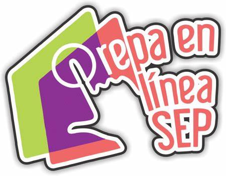

Prepa en línea SEP
Fase final
Reserva especial para el cacomixtle, en la zona norte de la ciudad de México
Alumna: Olimpia Teresa Guerrero Santoyo
Desarrollador: Ing. Antonio de Jesús Gómez Guerrero
Asesor: Lic. Jesús Antonio Torres Topete
Grupo: M23C2G32-042
Ingresar